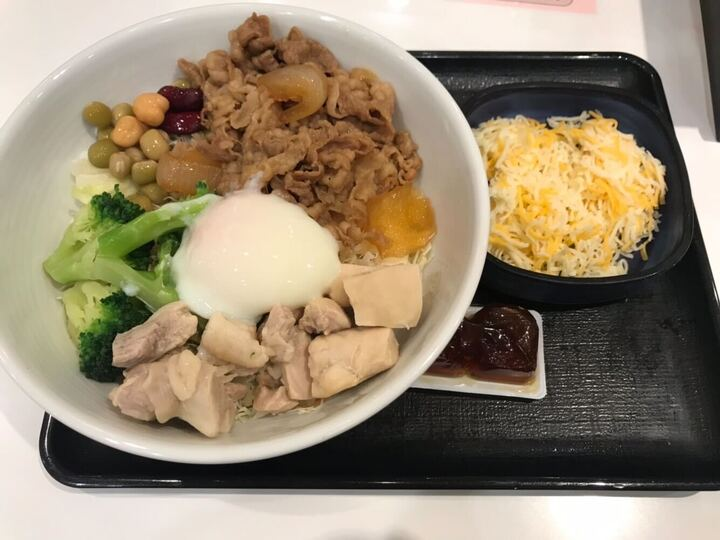

こちらのポートフォリオは、私が転職活動の際にご提出させていただくために制作しております。こちらのポートフォリオのプログラミング言語としては、HTML、CSS、JavaScript（Vue.js）を使用しており、こちらではBootstrapを使用することなく制作しました。今後より業務に取り組ませていただくことを心より願っております。よろしくお願いします。
※こちらのポートフォリオはMacbookPro13とiphoneXRの画面のサイズに対応しています。
こちらにある２枚のアコーディオン、画面をスクロールしている際の青色い枠の文章とお写真のアニメーション、右下のデジタル時計についてはVue.jsをお使いしております。
profile2
こちらは私がこれから社会に出て働くことを踏まえて、静岡県の駿府公園で撮った
写真です。私はこのときに大学生、社会人の方々と一緒に静岡県の駿府公園にお花見
をしていました。この頃は、2020年3月にコロナウイルスが蔓延し始めた頃でした。
生活を送っている中で人と人が交流をする機会が少なくなってしまい、寂しく感じる
ことが多かったのですが、私の友人の方々との交流を交わすことによって充実した時
間を過ごせました。
私は静岡英和学院大学を卒業致しました。大学生時代にはエンジニ
アとして業務に取り組むためにパソコンの学習をしておりました。私
は大学を卒業した後に東京都あるいは神奈川県のエリアでお仕事先を
探して、IT企業に入社することを決めていました。私はWebやシステ
ムの構築に取り組むエンジニアになりたいと思いました。
■ Bitbyte株式会社（2022年12月〜2023年5月）
・AIシステム／Webシステム開発に関する研修に参加しました。
・使用技術：PHP、GitHub、Linux、SQL、Python、Java、CSS、Excel
↓
■ アシストエンジニアリング株式会社
（板前寿司 アクアシティお台場店）（2023年6月〜2023年9月）
・飲食接客業務（調理補助、清掃）に従事しました。
・ITエンジニア研修として、Web構築に関する基礎学習に取り組みました。
・使用技術：HTML、CSS、JavaScript、PHP
↓
■ 株式会社木村ソフト（2023年10月〜2024年3月）
・Web環境構築およびシステム開発業務に従事しました。
・IT系／保険系プロジェクトに参画しました。
・使用技術：HTML、CSS、JavaScript、Java、Excel
↓
■ 就労移行ITスクール（2024年4月〜2024年12月）
・Webおよびシステム開発、事務業務に関する訓練に取り組みました。
・使用技術：HTML、CSS、JavaScript、Vue.js、React.js、Java、Excel、Word
↓
■ ユーシーカード株式会社（2024年12月〜2025年6月）
・事務業務として、データ管理・整理および社内外対応を担当しました。
・使用技術：Excel、Word、PowerPoint、Outlook

私はIT企業にて、私自身が持つ技術を駆使して様々な業務を遂行していきたく思います。私はエンジニアとして保険系、Webの構築、環境構築といった業務に携わらせていただいた機会がありました。どの業務も私にとって、望ましい体験をすることができたり成長することができたりする有意義な機会でした。私は、同僚の方々と切磋琢磨いただきながら仕事を進めたり、お客様方にご納得いただける開発ができるエンジニアになりたいと思っております。特には、Webやシステムの構築を行い、IT企業にて必要とされるエンジニアになりたく思います。

- 扱いたい言語とツール
- HTML
- CSS
- JavaScript
- Python
- Java
- Excel